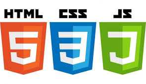

A Propos de Moi
Dans le cadre de ma reconversion
professionnelle avec inclu'pro Ariane Méditerranée, je souhaite
m'orienter vers le
domaine du développement web et web mobile.
Contact
Lieu : Toulon
Tel : +33663145058
Permis B : Véhiculé
Mail : Florence.Navet@outlook.fr
Savoir-être
- Faire preuve de rigueur
- S'adapter aux changements
- Faire preuve d'autonomie
- Faire preuve de réactivité
Expériences professionnelles
Opérateur Marine nationale Transmission
1990-2000
- Management d'une équipe
- Utilisation matériel informatique
- Tenue d'un standard téléphonique
- Classement de documents confidentiels
Auxiliaire de Vie Association Varsef
2000-2023
- Entretien du domicile
- Papiers administratifs
- Stimulations
- Courses
Formation
Eva Giraud Web - 2024 - Stage immersion
- WordPress - installation WAMPServer
- Création de thème enfant
- Début de création d'un site WordPress
Agence Digitale Bexter Toulon - Stage immersion
Modification d'un site WordPress à partir d'un template
Inclu Pro
Ariane Formation - 2024

Compétences
- Microsoft Word, Excel, PowerPoint
- Création de site internet (Wix, Eklablog)
- Création de serveur Discord
- Initiation HTML, CSS, JavaScript, Sass
Études - Diplômes
FENELON Niveau BAC
Toulon - 1990
CIN ST MANDRIER BAT Transmetteur
Saint Mandrier sur Mer - 1993
Centres d'intérêt
- Sous-titrage et encodage vidéo
- Création de sites web via des plateformes comme Wix, Eklablog, WordPress
- Gestion de réseaux sociaux et création de contenu
- Administration de serveurs Discord
- Création et gestion de chaînes YouTube